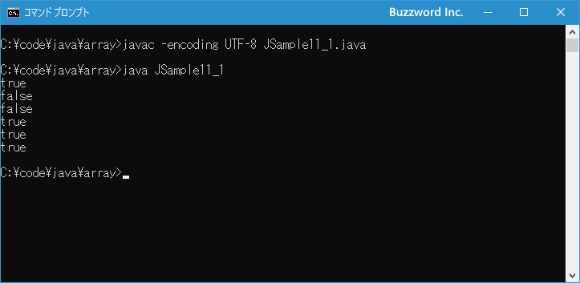

2つの配列の要素の値を比較する(equals,deepEquals)
2 つの配列が等しいかどうか調べるときに、 == 演算子では配列の参照先が一致しているかどうかを調べて、要素の値が等しいかどうかは調べません。ここでは Arrays.equals メソッドおよび Arrays.deepEquals メソッドを使って 2 つの配列の要素の値が一致しているかどうかを調べる方法を解説します。
配列と配列を==演算子で比較した場合
等価演算子である == を使用すると、基本データ型の場合には左側と右側の値が同じ場合に true と評価されます。
int a = 7; int b = 7; System.out.println(a == b); // true
配列のような参照型の値の場合、配列の要素に格納されている値が同じであっても、配列オブジェクトそのものが異なっている場合は == 演算子は false となります。
int[] a = {85, 78, 92};
int[] b = {85, 78, 92};
System.out.println(a == b); // false
参照型の値の場合、同じオブジェクトを参照している場合に == 演算子は true と評価されます。
int[] a = {85, 78, 92};
int[] b = a;
System.out.println(a == b); // true
このように 2 つの配列の要素に格納されている値が同じかどうかを調べるには == 演算子は使用できません。このあとで解説する Arrays.equals メソッドを使用する必要があります。
Arrays.equalsメソッドを使って比較する
2 つの配列に含まれる要素の値がすべて同じかどうかを調べるには Arrays クラスで用意されている equals メソッドを使用します。 equals はクラスメソッドとして定義されており、引数の型毎に異なるメソッドが定義されています。例えば int[] 型の値を引数に取る equals メソッドは次のように定義されています。
public static boolean equals(int[] a, int[] a2)
パラメータ:
a - 同等であるかどうかを判定する1つめの配列
a2 - 同等であるかどうかを判定する2つめの配列
戻り値:
2つの配列が同等である場合はtrue
1 番目の引数に指定した配列と、 2 番目の引数に指定した配列が要素の数が同じで、同じインデックスの要素の値が同じ場合に true を返します。なお null と null が格納されていた場合も同じと判定されます。
次のサンプルを見てください。
import java.util.Arrays; // java.util.Arraysのインポートが必要です
int[] a = {85, 78, 92};
int[] b = {85, 78, 92};
System.out.println(Arrays.equals(a, b)); // true
2 つの配列のオブジェクトは異なりますが、要素の数と同じインデックスの要素に格納されている値がすべて同じなので Arrays.equals メソッドは true を返しました。
もう一つサンプルを見てください。
import java.util.Arrays; // java.util.Arraysのインポートが必要です
int[] a = {85, 78, 92};
int[] b = {85, 92, 78};
System.out.println(Arrays.equals(a, b)); // false
要素の数と要素に格納されている値は同じですが、同じインデックスの要素を比較するため Arrays.equals メソッドは false を返しました。
もう一つサンプルを見てください。
import java.util.Arrays; // java.util.Arraysのインポートが必要です
int[] a = {85, 78, 92};
int[] b = {85, 78, 92, 80};
System.out.println(Arrays.equals(a, b)); // false
要素の数が異なっているため Arrays.equals メソッドは false を返しました。
このように Arrays.equals メソッドを使うことで、オブジェクトが異なっていても 2 つの要素の要素数と同じインデックスの要素の値が同じかどうかを調べることができます。
なお Arrays.equals メソッドで要素の値が等しいかどうかは == 演算子を使って行われるため、配列に格納されている値が参照型の場合は 2 つの配列の同じインデックスの要素が同じオブジェクトを参照している場合にだけ等しいと判断されます。
独自のクラスの配列を比較したときに、参照先が同じかどうかではなく、例えばフィールドの値が等しいかどうかを比較するようにするにはクラスの中で Object.equals メソッドをオーバーライドする必要があります。
それでは簡単なサンプルプログラムを作って試してみます。テキストエディタで次のように記述したあと、 JSample11-1.java という名前で保存します。
import java.util.Arrays;
class JSample11_1{
public static void main(String[] args){
int[] a = {85, 78, 92};
int[] b = a;
int[] c = {85, 78, 92};
System.out.println(a == b);
System.out.println(a == c);
System.out.println(b == c);
System.out.println(Arrays.equals(a, b));
System.out.println(Arrays.equals(a, c));
System.out.println(Arrays.equals(b, c));
}
}
コンパイルを行います。
javac -encoding UTF-8 JSample11_1.java
その後で、次のように実行してください。
java JSample11_1

== 演算子で true と評価されるのは同じオブジェクトの配列だけですが、 Arrays.equals メソッドであれば要素の数と要素の値が一致していれば true を返します。
Arrays.deepEqualsメソッドを使って比較する
比較する 2 つの配列が 1 次元配列の場合は Arrays.equals メソッドで要素の値が等しいかどうかの比較が行えますが、 2 次元配列以上の多次元配列の場合は要素の値が同じであっても true を返しません。
import java.util.Arrays; // java.util.Arraysのインポートが必要です
int[] a = {{85, 78}, {92,58}};
int[] b = {{85, 78}, {92,58}};
System.out.println(Arrays.equals(a, b)); // false
Arrays.equals メソッドの場合は要素の値を比較するときに == 演算子を使って比較しているため、 2 次元配列の場合に配列と配列を == で比較してしまうためです。
多次元配列の場合に、要素に格納されている配列の比較でも要素の値が等しいかどうかで比較するには、 Arrays.deepEquals メソッドを使用します。 deepEquals はクラスメソッドとして次のように定義されています。
public static boolean deepEquals(Object[] a1, Object[] a2)
パラメータ:
a1 - 同等であるかどうかを判定する1つめの配列
a2 - 同等であるかどうかを判定する2つめの配列
戻り値:
2つの配列が同等である場合はtrue
1 番目の引数に指定した配列と、 2 番目の引数に指定した配列が要素の数が同じで、同じインデックスの要素の値が配列の場合でも配列の要素の値を比較して同じ場合に true を返します。
次のサンプルを見てください。
import java.util.Arrays; // java.util.Arraysのインポートが必要です
int[] a = {{85, 78}, {92,58}};
int[] b = {{85, 78}, {92,58}};
System.out.println(Arrays.deepEquals(a, b)); // true
2 つの配列のオブジェクトは異なり、また要素に格納されている配列のオブジェクトも異なりますが、要素の数と同じインデックスの要素に格納されている配列の各要素の値がすべて同じなので Arrays.deepEquals メソッドは true を返しました。
それでは簡単なサンプルプログラムを作って試してみます。テキストエディタで次のように記述したあと、 JSample11-2.java という名前で保存します。
import java.util.Arrays;
class JSample11_2{
public static void main(String[] args){
int[][] a = {{10, 8} ,{9, 14}};
int[][] b = a;
int[][] c = {{10, 8}, {9, 14}};
System.out.println(Arrays.equals(a, b));
System.out.println(Arrays.equals(a, c));
System.out.println(Arrays.equals(b, c));
System.out.println(Arrays.deepEquals(a, b));
System.out.println(Arrays.deepEquals(a, c));
System.out.println(Arrays.deepEquals(b, c));
}
}
コンパイルを行います。
javac -encoding UTF-8 JSample11_2.java
その後で、次のように実行してください。
java JSample11_2
2 次元配列の場合、 Arrays.equals メソッドでは false となりますが Arrays.deepEquals メソッドでは要素に格納された配列の要素の値が一致していれば true を返しました。
-- --
Arrays.equals メソッドおよび Arrays.deepEquals メソッドを使って 2 つの配列の要素の値が一致しているかどうかを調べる方法を解説します。
( Written by Tatsuo Ikura )

著者 / TATSUO IKURA
初心者～中級者の方を対象としたプログラミング方法や開発環境の構築の解説を行うサイトの運営を行っています。